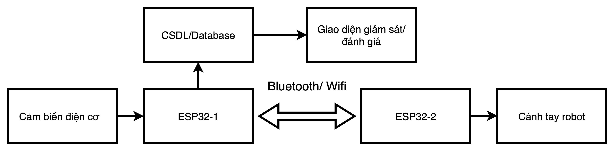
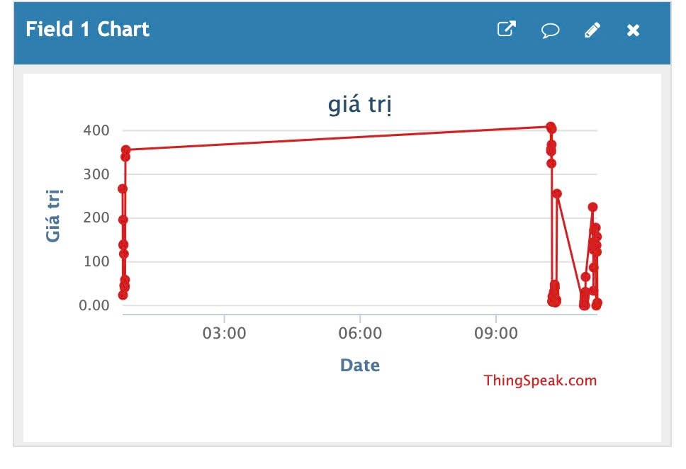
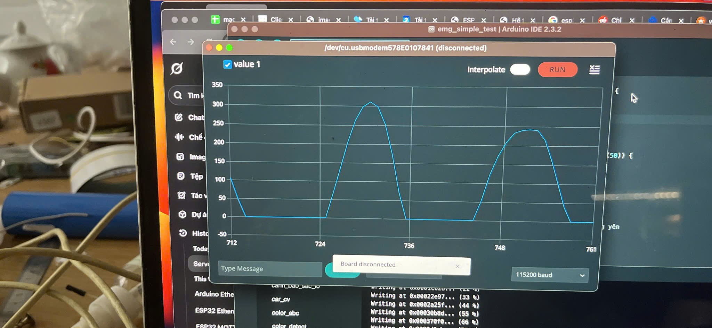

1. Xác định mục tiêu
Ứng dụng EMG điều khiển cánh tay máy từ xa. Có khả năng ứng dụng vào việc thao tác từ xa đối với các vấn đề liên quan đến hoá chất độc hại. Ứng dụng trong y sinh khi chăm sóc bệnh nhân nhiễm virus cần phải cách ly.
2. Nghiên cứu tài liệu
Ở bước này, nhóm tập trung vào việc tìm hiểu cơ sở lý thuyết và tài liệu liên quan để đảm bảo thiết kế đúng hướng.
- Tín hiệu EMG: Tìm hiểu cách cơ bắp tạo ra xung điện, đặc trưng tần số và biên độ, các yếu tố gây nhiễu (mồ hôi, chuyển động, điện lưới).
- Xử lý tín hiệu: Nghiên cứu các kỹ thuật lọc nhiễu (Butterworth, Notch), trích xuất đặc trưng (RMS, MAV, Zero Crossing) và phân loại cử động.
- Robot y sinh: Khảo sát các ứng dụng thực tế trong phục hồi chức năng, tay giả, và giao tiếp giữa người & máy.
Kết quả của giai đoạn này là cơ sở lý thuyết vững chắc để tiến hành các bước tiếp theo như thiết kế hệ thống và lắp ráp phần cứng.
3. Thiết kế hệ thống
3.1. Sơ đồ khối
Xác định luồng dữ liệu EMG → xử lý → truyền → robot.
3.2. Lựa chọn phần cứng
EMG
Cảm biến EMG được DFRobot và OYMotion hợp tác sản xuất, có thể phản ánh hoạt động cơ và thần kinh của con người bằng cách phát hiện sEMG. Cảm biến này tích hợp mạch lọc và mạch khuếch đại. Nó khuếch đại sEMG tối thiểu trong phạm vi ±1,5mV 1000 lần và giảm nhiễu (đặc biệt là nhiễu tần số nguồn) bằng đầu vào vi sai và mạch lọc analog. Tín hiệu đầu ra là analog, lấy 1,5V làm điện áp tham chiếu. Dải điện áp đầu ra là 0~3,0V. Cường độ tín hiệu phụ thuộc vào hoạt động của cơ. Dạng sóng tín hiệu đầu ra biểu thị hoạt động của cơ và giúp phân tích và nghiên cứu tín hiệu sEMG. Cụ thể, chúng ta có thể sử dụng ESP32 làm bộ điều khiển để phát hiện hoạt động của cơ, ví dụ: kiểm tra xem cơ có bị căng không; sức mạnh của cơ, v.v. Cảm biến cảm ứng chủ động này có thể cung cấp khả năng thu thập tín hiệu chất lượng cao và dễ sử dụng. Chỉ cần chuẩn bị đơn giản để áp dụng mô-đun cho cả vùng tĩnh và vùng động. Điện cực khô phải được áp dụng cho mô-đun và có thể đọc được tín hiệu chất lượng tốt ngay cả khi không có gel dẫn điện. So với gel dẫn điện dùng một lần cần thiết cho điện cực y tế, việc sử dụng điện cực khô của chúng tôi thuận tiện hơn và có tuổi thọ cao hơn.

Vi điều khiển ESP32 C6
ESP32 C6 Dev là bo mạch phát triển dựa trên module ESP32-C6-WROOM-1-N8 kích thước nhỏ được sản xuất bởi Espressif, có 4MB Flash, 320KB ROM, 512KB SRAM. Tất cả các chân I/O được đưa ra header ở cả hai bên để dễ dàng kết nối, người dùng có thể kết nối các thiết bị ngoại vi bằng dây nối hoặc lắp ESP32-C6 Dev trực tiếp lên một breadboard.

3.3. Giao thức truyền dữ liệu
Sử dụng WiFi và MQTT để truyền dữ liệu.
MQTT là một giao thức nhắn tin dựa trên các tiêu chuẩn hoặc một bộ các quy tắc được sử dụng cho việc giao tiếp máy với máy. Cảm biến thông minh, thiết bị đeo trên người và các thiết bị Internet vạn vật (IoT) khác thường phải truyền và nhận dữ liệu qua mạng có tài nguyên và băng thông hạn chế. Các thiết bị IoT này sử dụng MQTT để truyền dữ liệu vì giao thức này dễ triển khai và có thể giao tiếp dữ liệu IoT một cách hiệu quả. MQTT hỗ trợ nhắn tin giữa các thiết bị với đám mây và từ đám mây đến thiết bị. Sử dụng HiveMQ Broker để giao tiếp gửi và nhận dữ liệu.
Ngoài MQTT, dữ liệu EMG từ cảm biến cũng có thể được truyền trực tiếp lên ThingSpeak, một nền tảng IoT cho phép lưu trữ, phân tích và trực quan hóa dữ liệu thời gian thực. ThingSpeak cung cấp API đơn giản để gửi dữ liệu qua HTTP POST hoặc MQTT, giúp giám sát tín hiệu EMG và các thông số khác từ xa. Việc truyền dữ liệu lên ThingSpeak giúp phân tích dài hạn và dễ dàng xây dựng biểu đồ trực quan trên nền tảng web.
4. Lập trình & xử lý EMG
4.1. Cảm biến EMG
Cảm biến EMG (Electromyography) được sử dụng để đo hoạt động điện của cơ bắp. Quá trình bắt đầu bằng việc gắn cảm biến lên cơ của người dùng, sau đó tín hiệu Analog được gửi tới vi điều khiển ESP32 để ghi nhận và giám sát. ESP32 thực hiện việc đọc dữ liệu liên tục, chuyển đổi tín hiệu Analog sang dạng số và lưu trữ tạm thời để xử lý.
Do tín hiệu EMG rất yếu và dễ bị nhiễu từ môi trường xung quanh hoặc các thiết bị điện tử khác, cần thực hiện các bước lọc nhiễu (band-pass filter) để loại bỏ tạp âm và tín hiệu không mong muốn. Sau khi lọc, tín hiệu sạch sẽ được sử dụng cho các bước trích xuất đặc trưng và điều khiển servo của cánh tay robot.
Ngoài ra, cảm biến EMG còn cung cấp thông tin về cường độ cơ bắp, giúp hệ thống phân loại các cử động khác nhau, từ đó mang lại khả năng điều khiển mượt mà và chính xác cho cánh tay hỗ trợ.
4.2. Vi điều khiển ESP32
ESP32 là vi điều khiển mạnh mẽ với khả năng xử lý tín hiệu nhanh và tích hợp Wi-Fi, rất phù hợp cho các ứng dụng IoT và y sinh. Để bắt đầu, cần cài đặt Arduino IDE và thêm thư viện hỗ trợ ESP32. Cấu hình môi trường bao gồm chọn bo mạch, cổng COM và cài đặt tốc độ truyền dữ liệu phù hợp.
![Arduino IDE]()
Sau khi cài đặt, lập trình ESP32 để đọc tín hiệu Analog từ cảm biến EMG. Tín hiệu EMG rất nhạy và thường có nhiễu, do đó cần áp dụng các bước lọc tín hiệu cơ bản trên ESP32 trước khi sử dụng. Việc lập trình còn bao gồm truyền dữ liệu đã xử lý lên Server hoặc máy chủ MQTT, cho phép giám sát và điều khiển từ xa.
ESP32 cũng hỗ trợ các thuật toán xử lý dữ liệu tại chỗ, ví dụ như K-Mean để phân loại các mẫu tín hiệu EMG, từ đó xác định cử động của cơ bắp. Thuật toán này giúp hệ thống học cách nhận diện các cử chỉ khác nhau và chuyển đổi thành lệnh điều khiển robot chính xác hơn.
Ngoài ra, ESP32 còn có khả năng lưu trữ tạm thời dữ liệu trên bộ nhớ trong hoặc EEPROM, đảm bảo dữ liệu EMG không bị mất khi truyền lên Server bị gián đoạn. Việc tối ưu hóa chương trình và quản lý bộ nhớ là rất quan trọng để duy trì độ chính xác của hệ thống.
4.3. Cánh tay robot
Lắp ráp servo và khung cơ khí.

5. Lập trình & xử lý EMG
Trong bước này, tín hiệu EMG được xử lý, trích xuất đặc trưng và sử dụng để điều khiển cánh tay robot. Ngoài ra, chúng tôi có video minh họa cách tích hợp điều khiển:
5.1. Kết nối servo
Kết nối servo với driver.
5.2. Mapping EMG → góc quay
Quy đổi tín hiệu EMG thành góc điều khiển.
5.3. Hiệu chỉnh độ nhạy
Tinh chỉnh để cử động mượt mà.
6. Kiểm thử & đánh giá
Thử nghiệm với nhiều người, đo độ chính xác và độ trễ.